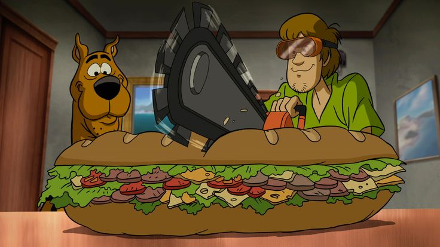

Scooby-Doo: A Timeless Mystery
The Scooby-Doo franchise began in 1969 with the debut of the classic animated series Scooby-Doo, Where Are You! Created by Joe Ruby and Ken Spears, the show introduced audiences to Mystery Inc., a group of teenagers and their talking Great Dane, Scooby-Doo, who solved mysteries involving supposedly supernatural creatures. With its catchy theme song and comedic twists, Scooby-Doo quickly became a favorite among kids and adults alike.
The Evolution of the Franchise
Over the decades, the Scooby-Doo franchise has grown to include numerous spin-offs, specials, and movies. Each iteration has brought its unique twist to the formula while retaining the heart of the original. Series like The 13 Ghosts of Scooby-Doo and A Pup Named Scooby-Doo showcased the gang in new and imaginative ways, while modern updates like What's New, Scooby-Doo? introduced the series to a new generation. The franchise has also embraced a variety of animation styles and storytelling formats. From traditional Saturday morning cartoons to direct-to-video movies, Scooby-Doo has remained adaptable and fresh while staying true to its core premise of unmasking villains who are “just regular people in costumes.”
